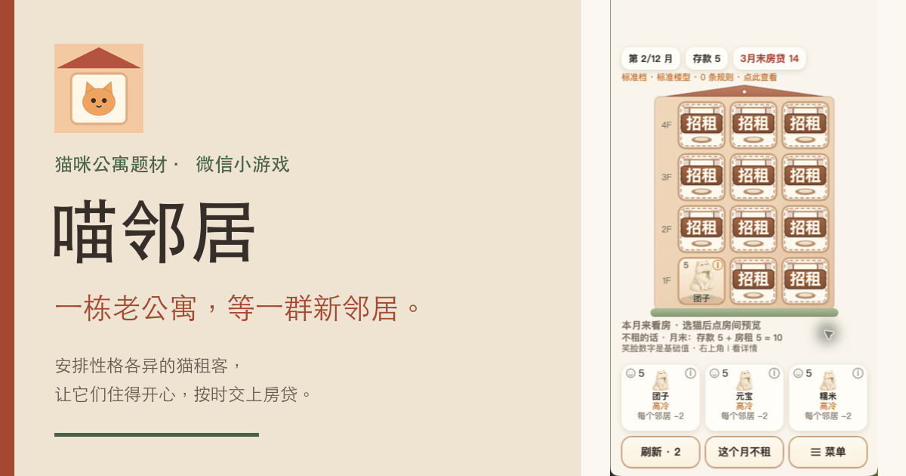

猫咪公寓题材 · 微信小游戏
喵邻居
一栋老公寓，
等一群新邻居。

你是一栋老公寓的房东，租客全是性格各异的猫。把猫安排进合适的房间，让它们住得开心，按时交上房贷。
这是微信小游戏，需在微信内运行。这里是介绍页。
查看正式码公 寓 日 常
先看看，猫们怎么住
以下画面均截取自微信内当前可搜索到的喵邻居体验版实机，截取日期为 2026-11-09。


来 访 须 知
进门前的小问题
- 微信里能搜到吗？
- 2026-11-09 已在微信内搜索并进入喵邻居体验版，本页三张画面即来自该体验版实机。正式版入口及非管理员账号仍需另行核实。
- 需要下载 App 吗？能直接在网页玩吗？
- 喵邻居是微信小游戏，需通过微信进入，无需单独下载安装喵邻居 App。本页只提供介绍、游戏画面与正式码。
- 正式码能保证进入吗？
- 这是从喵邻居后台取得的正式码，不是体验码。手机扫码与普通用户进入尚待实测，正式码存在不代表所有账号都能进入。
- 这是谁的介绍页？
- 这是喵邻居项目维护者发布的独立介绍页。核对账号请认准 AppID：
wx99f30143ac9176d0。有问题可在公开反馈区留言，请勿上传个人敏感信息。